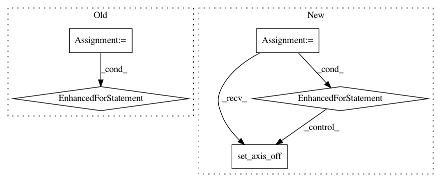

958f8f41da4f00c2e9c8d1be0616fcc59c5ee3f0,doc/examples/edges/plot_random_shapes.py,,,#,15
Before Change
figure = plt.figure(figsize=(10, 10))
for n, i in enumerate([image, image2, image3, image4]):
axis = plt.subplot(2, 2, n + 1)
axis.tick_params(bottom="off", top="off", left="off", right="off")
axis.set_xticklabels([])
axis.set_yticklabels([])
plt.imshow(i)
plt.show()
// These shapes are well suited to test segmentation algorithms. Often, we want
// shapes to overlap to test the algorithm. This is also possible:
After Change
image4, _ = random_shapes((128, 128), max_shapes=10, min_pixel_intensity=0)
fig, axes = plt.subplots(2, 2, figsize=(10, 10))
for ax, image in zip(axes.ravel(), [image1, image2, image3, image4]):
ax.imshow(image)
ax.set_axis_off()
// These shapes are well suited to test segmentation algorithms. Often, we want
// shapes to overlap to test the algorithm. This is also possible:
image, _ = random_shapes(
(128, 128), min_shapes=5, max_shapes=10, min_size=20, allow_overlap=True)
fig, axis = plt.subplots()
axis.imshow(image)
In pattern: SUPERPATTERN
Frequency: 3
Non-data size: 5
Instances
Project Name: scikit-image/scikit-image
Commit Name: 958f8f41da4f00c2e9c8d1be0616fcc59c5ee3f0
Time: 2017-10-21
Author: peter@goldsborough.me
File Name: doc/examples/edges/plot_random_shapes.py
Class Name:
Method Name:
Project Name: scikit-image/scikit-image
Commit Name: 4c67dbb45174f2034668122136e9125cf1519d33
Time: 2016-08-23
Author: multicolor.mood@gmail.com
File Name: doc/examples/transform/plot_edge_modes.py
Class Name:
Method Name:
Project Name: nipy/dipy
Commit Name: 8120c20832d699cba6110f21d870d373afd06e4c
Time: 2015-03-29
Author: m.descoteaux@usherbrooke.ca
File Name: doc/examples/piesno.py
Class Name:
Method Name: